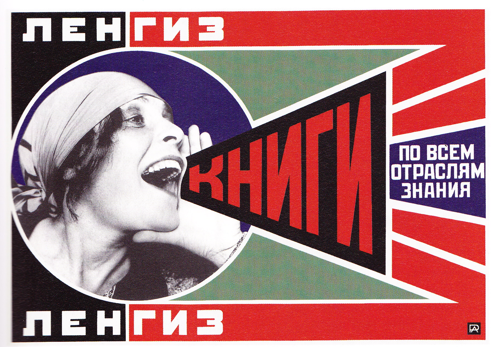

Descripción
Los colores que empleaba Rodchenko, Rojo, azul y verde, son colores básicos que recuerdan a los utilizados en la escuela primaria. Representan lo básico, como era lograr que la clase trabajadora se educara lo suficiente como para convertirse en la clase dominante. La palabra roja «Libros» en el cartel y los espacios activos rojos a su alrededor generaban entusiasmo por este nuevo programa y le daban carácter de urgencia. El azul oscuro que rodeaba a Lilia representaba el conocimiento y la verdad. Ella y el Estado sabían lo que era mejor para los ciudadanos, la educación. El conocimiento se consideraba poder y el azul generaba confianza. El verde al fondo mostraba seguridad y humanidad.
Según George Didi-Huberman, la imagen es potente dado a que no busca el poder por sí misma, y es ahí, donde radica su belleza.
Sobre el autor
- Aleksandr Mijáilovich Rodchenko (1891-1956) fue uno de los artistas más prolíficos y multifacéticos de inicios del siglo XX. Se desempeñó con gran destreza y habilidad en variados ámbitos: dibujo, pintura y escultura; pero también en diseño gráfico y publicidad. A la vez, tuvo una celebrada labor dentro de la fotografía y el cine.
- Fue fundador, junto con Vladimir Tatlin y El Lissitzky, de uno de los movimientos más revolucionarios de las vanguardias históricas: el constructivismo. Este radical movimiento brindó una “identidad visual” a la revolución rusa, y tuvo como principal objetivo llevar el arte al pueblo, y rescatarlo, así, de las élites.
Contexto de la obra
Ródchenko se asoció con el poeta Vladimir Mayakovsky, creando una agencia en la que desarrollaban piezas publicitarias, entre ellos, carteles y anuncios encargados por el estado, incluido “Knigi (Libros)”. La prosa era aportada por el poeta mientras que Ródchenko se centraba en la parte gráfica. Mayakovsky a su vez, proporcionó la conexión con Lilia Brik, su amante, y esposa de su amigo Osip Brik, escritor, crítico literario y de las vanguardias rusas. Formaban un triángulo amoroso y artístico. Lili fue una musa para una multitud de artistas de la época. Su aspecto poco convencional y llamativo y sobretodo su espíritu, supuso una fuente de inspiración.